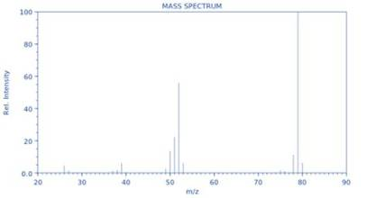
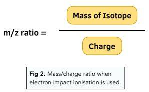
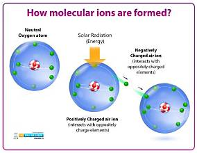
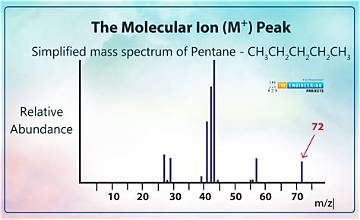

Mass spectrum
| Vietnamese | NOUN5. Phổ khối lượng |
|---|---|
| English | Mass spectrum |
| Pronunciation | /mæs ˈspektrəm/ |
| Word type | noun (as labelled in the PDFs) |
Topic 3 — Meaning (Vietnamese)
Đồ thị biểu diễn độ phổ biến của ion theo tỉ số khối lượng trên điện tích
Meaning (English)
A graph showing ion abundance as a function of mass-to-charge ratio. (Đồ thị biểu diễn độ phổ biến của ion theo tỉ số khối lượng trên điện tích).
Example
The mass spectrum contains several peaks. (Phổ khối lượng chứa một số pic).
Images from the PDFs





